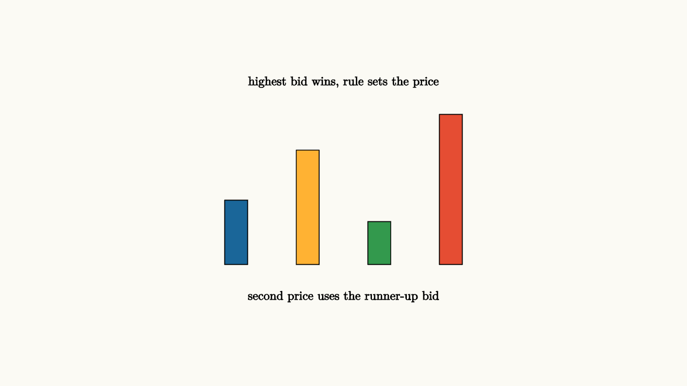

Auctions Turn Values Into Rules
An auction is a machine for turning private values into an allocation. The rules matter because bidders respond strategically. A sealed-bid first-price auction and a second-price auction can sell the same object while creating different incentives.
The object could be a painting, an online ad slot, a government bond, a radio spectrum license, or a used bicycle. In each case, the seller wants to learn who values the item most, and bidders want to win only when the price leaves them with enough surplus. The auction rule is the environment in which those private values are revealed, hidden, or distorted.
In a second-price auction, the highest bidder wins and pays the second-highest bid. For a bidder with value $v$, bidding truthfully is a dominant strategy in the ideal model. Bidding higher than $v$ can make them win at a price they dislike. Bidding lower than $v$ can make them lose when they would have been happy to win.
The beauty of the second-price rule is that the payment is set by the nearest competitor, not by the winner's own bid. If your value is $80$, bidding $80$ wins exactly when the runner-up bid is below $80$, which is exactly when winning is worth it. Raising your bid above $80$ only risks paying more than the item is worth to you. Lowering your bid below $80$ only risks losing profitable wins.

source
background = [0.985, 0.98, 0.955, 1]
camera = Camera(4.8b)
mesh bids = block {
. fill{BLUE} center{[-1.5, -0.55, 0]} Rect([0.32, 0.9])
. fill{ORANGE} center{[-0.5, -0.2, 0]} Rect([0.32, 1.6])
. fill{GREEN} center{[0.5, -0.7, 0]} Rect([0.32, 0.6])
. fill{RED} center{[1.5, 0.05, 0]} Rect([0.32, 2.1])
. center{[0, 1.55, 0]} Text("highest bid wins, rule sets the price", 0.62)
. center{[0, -1.45, 0]} Text("second price uses the runner-up bid", 0.62)
}
"bids"
play Fade(0.6)The first-price auction has a different logic. If you bid your full value and win, you earn no surplus. Bidders shade their bids below value, balancing a lower price against a lower chance of winning.
Auction theory studies these tradeoffs: revenue, efficiency, collusion risk, bidder information, reserve prices, and budget constraints.
Information changes the story. If every bidder has a private value, like personal enjoyment from a concert ticket, the strategic problem is mostly about surplus. If the item has a common unknown value, like drilling rights or a collectible being resold, winning can be bad news: it may mean your estimate was the most optimistic. This is the winner's curse. Rational bidders shade their bids to account for the information contained in winning.
source
param shade = 0.0
background = [0.985, 0.98, 0.955, 1]
camera = Camera(4.8b)
let Shade = |shade| block {
. stroke{GRAY, 2} Line(start: [-2.2, -1.0, 0], end: [2.2, -1.0, 0])
. stroke{GRAY, 2} Line(start: [-2.2, -1.0, 0], end: [-2.2, 1.1, 0])
. stroke{BLUE, 3} Line(start: [-1.8, -0.75, 0], end: [1.6, 0.95, 0])
. stroke{ORANGE, 3} Line(start: [-1.8, -0.75, 0], end: [1.6, 0.95 - 0.55 * shade, 0])
. center{[0, 1.45, 0]} Text("first-price bids often shade below value", 0.62)
}
"bid equals value"
mesh s = Shade(shade: $shade)
play Fade(0.5)
"strategic shading"
shade = 1.0
s = Shade(shade: $shade)
play Lerp(1.0)Reserve prices give the seller another lever. A minimum acceptable price can raise revenue when it prevents selling too cheaply, yet it can also leave the item unsold. Entry rules matter too. More bidders usually increase competition, but complicated rules can discourage participation. Good auction design cares about the whole game, including who shows up.
The lesson to keep: an auction is a mathematical rule system. Change the payment rule, information, reserve price, or entry condition, and bidder behavior changes with it.